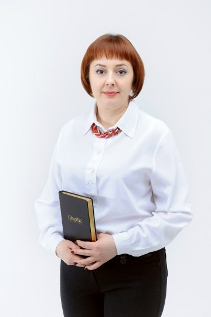

но твоя жизнь всё ещё зависит от компании?
Небольшой честный разговор в 10 шагов для женщин, которые чувствуют, что могут больше.
Начать разговор ↓Иногда один честный вопрос может изменить взгляд на свою жизнь. Ответь себе спокойно — без правильных и неправильных ответов. Нажми на любой вопрос, если он тебе откликается.
И самый честный вопрос.
Если через 5 лет всё останется так же:
тот же график · тот же доход · те же ограничения
будешь ли ты чувствовать, что использовала свой потенциал?
Если хотя бы один вопрос откликнулся — этот разговор для тебя.
Нажми на карточку, если это про тебя:
Если ты отметила 2–3 пункта — это уже хороший сигнал.
Если 4 и больше — у тебя есть сильная база для собственного дела.

За последние годы я разговаривала со многими женщинами. И почти каждая говорит похожие вещи:
Но почти всегда звучит ещё одна фраза:
И очень часто это правда.
Отметь то, что откликается:
После 40 многие женщины начинают думать не только о работе. А о свободе.
Свободе времени. Свободе решений. Свободе жить так, как хочется.
Хочется самой решать:
Но если доход зависит только от работодателя — эти решения остаются ограниченными.
И тогда появляется вопрос:
Меня зовут Инна. Сегодня я наставник и лидер в сетевой компании. Но так было не всегда.
Мой путь начался с очень сложного периода.
11 лет назад жизнь резко вывела меня из зоны комфорта.
Это был очень сложный период. Было страшно.
Но мы с мужем начали делать то, что могли. Нашли самую простую работу. Шаг за шагом начали выстраивать жизнь заново. Меняли профессии. Учились. Искали возможности.
И всё это время рядом со мной был сетевой бизнес. Но честно скажу — я долго сомневалась. Я не верила в «быстро и легко». Мне нужно было понять: есть ли здесь система и честный путь.
И только со временем я увидела: этот бизнес работает не потому, что он волшебный. Он работает потому, что основан на людях и доверии.
Ответь себе на несколько вопросов.
Нажми на любой шаг пути, чтобы узнать подробнее:
Ничего не происходит резко. Но если двигаться спокойно и системно — этот путь становится реальным.
Этот путь не про мгновенные результаты. Но со временем он способен изменить несколько важных вещей. Нажми, чтобы узнать подробнее:
Представь, что проходит год. Ты всё так же работаешь с людьми. Но у тебя есть ещё одно направление, которое ты постепенно развиваешь.
И в жизни становится больше:
И самое главное — ты начинаешь чувствовать, что сама влияешь на свою жизнь гораздо больше.
Что изменилось бы в твоей жизни, если бы появился дополнительный доход? — Выбери свой вариант — жми 👇
Представь, что ты решила попробовать новое направление. Как тебе комфортнее двигаться?
Разобраться и задать вопросы. Без спешки, в своём темпе.
Начать с нескольких часов в неделю, совмещая с основной работой.
Быстрее освоить систему и активно развивать направление.
Любой путь возможен. Главное — идти в своём темпе.
…чтобы увидеть возможности, которые раньше были незаметны.
Этот разговор ни к чему тебя не обязывает. Ты не обязана менять работу, принимать решение или начинать прямо сейчас.
Напиши мне сообщение «РАЗОБРАТЬСЯ» — и мы спокойно поговорим.
Или напиши «ИНТЕРЕСНО» — и я пришлю приглашение на ближайшую встречу, где покажу, как работает эта система.
Иногда всё начинается с одного шага